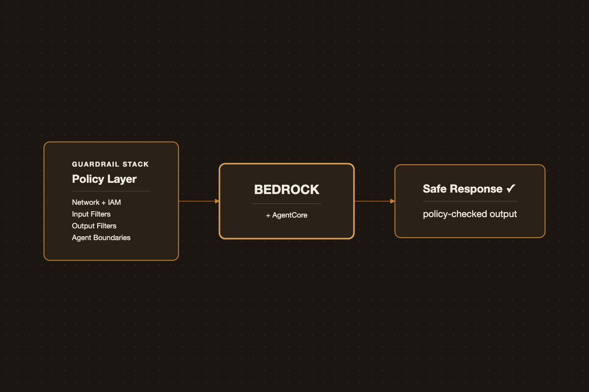

The Guardrail Stack for Bedrock: Notes for the Generative AI Developer Exam
The Guardrail Stack for Bedrock: Notes for the Generative AI Developer Exam

Bedrock Guardrails is one control, not the whole story. Securing an LLM service — especially an agentic one built on AgentCore — is a defense-in-depth problem: no single layer catches everything, and the layers that matter most (prompt injection, excessive agency) are ones a traditional AppSec checklist doesn’t cover at all. The following ten layers are how I map that problem when designing a Bedrock or AgentCore architecture, roughly ordered from the network up to governance.
1. Infrastructure and Network
The perimeter. VPC isolation, private subnets, and VPC endpoints (PrivateLink) for Bedrock keep traffic off the public internet entirely. Security groups and NACLs restrict which services can reach model endpoints, and SageMaker-hosted models should sit inside a VPC with no public egress by default.
2. Identity and Access Management
Least-privilege IAM is the layer that fails quietest — an over-broad role doesn’t throw an error, it just sits there as risk. For Bedrock, that means scoping bedrock:InvokeModel to specific model ARNs and using condition keys to restrict by source VPC or tag, rather than granting invoke access account-wide. For AgentCore, the same principle applies per agent identity: its permission boundary should map to the narrowest set of tools and actions that specific agent needs, not a broad shared service role reused across agents.
3. Data Protection
TLS in transit and KMS-managed encryption at rest for prompts, completions, embeddings, and vector store content. The harder part isn’t the encryption — it’s the classification decision upstream of it: what should never reach a model at all (PII, secrets, regulated data) versus what can, with customer-managed KMS keys where you need auditable control over who’s able to decrypt.
4. Input Security
The layer most specific to LLMs, and the one generic AppSec tooling has no answer for. Bedrock Guardrails applies denied topics, content filters, and word/phrase blocklists to incoming prompts before they reach the model. For agentic systems this extends past the user’s own input: content flowing in from tool outputs or retrieved documents needs the same scrutiny, since indirect prompt injection through RAG content or tool results is one of the most common real-world attack paths — and the easiest one to forget, since it doesn’t look like “user input” at the code level.
5. Model-Level Controls
Governance over which teams and roles can invoke which foundation models, version pinning so a model swap doesn’t silently change behavior in production, and — for fine-tuned models — protecting training data and adapter artifacts from leakage or tampering. Rate limiting and quota management belong here too, guarding against denial-of-wallet as much as denial-of-service.
6. Output Security
Guardrails apply on the way out as well as the way in: PII detection and redaction, toxicity and harmful-content filtering, and contextual grounding checks to catch hallucinated or ungrounded output before it reaches a user or a downstream system that will act on it unquestioningly.
7. Agent and Tool-Use Security
The layer specific to AgentCore-style architectures, and the one that maps most directly to OWASP’s “excessive agency” risk. Sandbox tool execution, define an explicit action permission boundary per tool, and require human-in-the-loop approval for high-risk actions — payments, deletions, external API calls. The governing rule: an agent should never hold broader permissions than the narrowest task it’s performing at that moment, not the broadest task it might ever perform.
8. Application and API
The layer that would exist even without an LLM in the picture: authN/authZ at the API Gateway or ALB, WAF rules against injection and abuse patterns, request throttling, and session management tight enough that conversation context can’t be hijacked or leaked across users.
9. Observability and Audit
CloudTrail for API-level audit logs, CloudWatch for runtime monitoring, and — increasingly — logging actual prompts and completions, with redaction, for security review and incident response. This is also where anomaly detection on invocation patterns hooks in, since a compromised credential calling InvokeModel looks identical to a legitimate one until you’re watching volume and pattern, not just auth success.
10. Governance and Compliance
Data residency controls and model usage policy, tied back to a framework like the OWASP Top 10 for LLM Applications. It’s a useful checklist to map each layer above against, and a fast way to spot gaps:
| OWASP LLM Risk | Layer(s) that address it |
|---|---|
| Prompt injection | Input security (4), Agent and tool-use security (7) |
| Insecure output handling | Output security (6) |
| Training data poisoning | Model-level controls (5) |
| Model denial of service | Model-level controls (5), Infrastructure and network (1) |
| Supply chain vulnerabilities | Model-level controls (5), Governance (10) |
| Sensitive information disclosure | Data protection (3), Output security (6) |
| Insecure plugin/tool design | Agent and tool-use security (7) |
| Excessive agency | Identity and access management (2), Agent and tool-use security (7) |
| Overreliance | Output security (6), Observability and audit (9) |
| Model theft | Identity and access management (2), Data protection (3) |
Where This Actually Bites
In practice, the layers teams get right first are the ones that look like traditional infra security — VPC, IAM, TLS — because the tooling and habits already exist. The layers that get skipped are 4 and 7: input security against indirect injection, and tool-use boundaries on agents. Both require reasoning about what the model is allowed to trust, which isn’t a question conventional AppSec review is set up to ask. If you’re auditing an existing Bedrock or AgentCore system and only have time for one pass, start there.